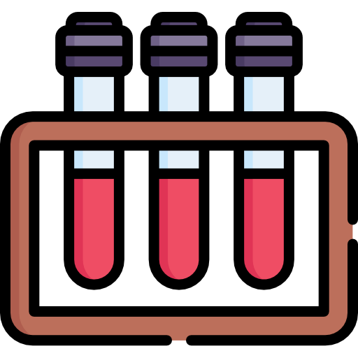
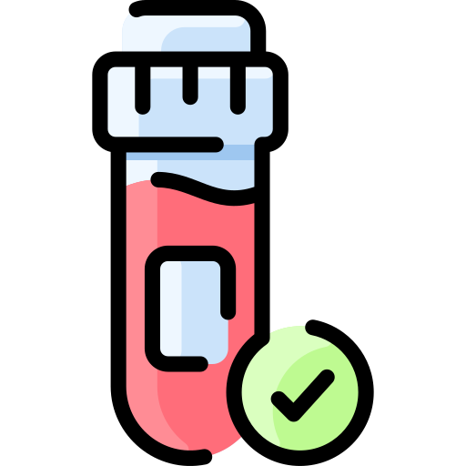
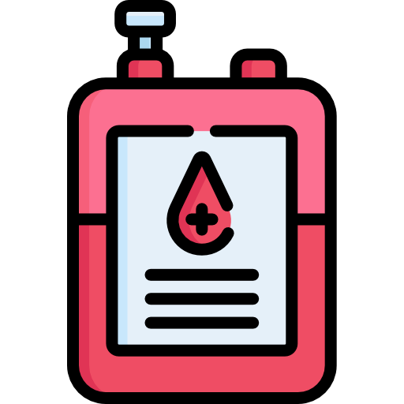
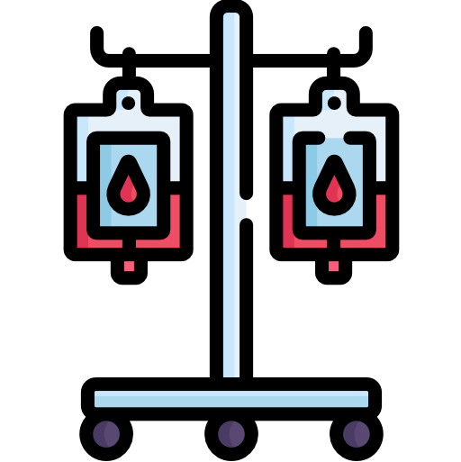

Light up someone's life
" Be a Donor "
Blood Donation Facts:
 Every two seconds someone needs blood
Every two seconds someone needs blood
-  The donated blood will be replaced in 56 days (less than 2 months)
- Donor will not become "weak" after blood donation
-  A person has 5 - 6 litres of blood in his/her body
-  One can donate blood every 90 days (3 months)
-  It takes only 15 to 20 minutes to donate blood
Vedio about Blood Donation Tips from the Pros: